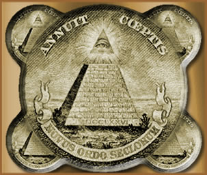
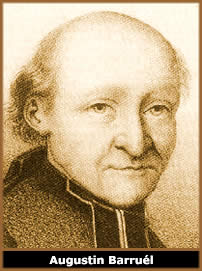

A palavra illuminati tem
sua origem no latim e significa literalmente iluminado.
No entanto, iluminado é uma expressão muito comum
no vocabulário ocultista, principalmente quando se trata
de grupos secretos e doutrinas específicas, fazendo referência
a uma elevação espiritual da qual seus membros supostamente
são dotados.
Dessa
forma, ao longo da história, encontram-se vários
registros sobre os "iluminados" em culturas bastante
distintas. Na Europa medieval, precisamente entre os séculos
XV, XVI e XVII, havia "iluminados" na Espanha, Itália
e França, sob a alcunha de alumbrados, illuminés
e martinistas, por exemplo. Ainda, personagens como Inácio
de Loyola estariam envolvidos de alguma forma, ou pelo menos nutriam
uma certa proximidade, com um destes grupos. Sob uma abordagem
mais ampla, maçons,
rosacruzes e templários
podem ser incluídos no mesmo ponto de vista.
Naturalmente, devido à poderosa
influência da Igreja Católica neste período,
algumas destas sociedades secretas foram investigadas e desmembradas
pelo implacável sistema
inquisitório; anulando, dessa forma, importantes registros
históricos sobre suas atividades.
As origens
da Ordem
Há pelo menos duas possíveis origens
da ordem que atualmente é conhecida por Illuminati. Robert
Wilson, autor de O Livro dos Illuminati, afirma que a
ordem fora concebida em 1090 por Hassan Isabbah com o nome de
Ismaelita (posteriormente conhecidos como Haxixinos
devido ao consumo de haxixe) e um propósito ocultista de
atingir a imortalidade através de práticas de magia.
Esse grupo de Isabbah teria sido aniquilado pelos mongóis
de Gengis-Khan sendo que alguns poucos sobreviventes migraram
para o ocidente e deram continuidade aos preceitos da extinta
ordem.
Outra hipótese refere-se à ordem
conhecida por Illuminati da Baviera. Fundado no primeiro
dia de maio do ano de 1776 por Adam Weishaupt e Adolph Von Knigge,
na região da Baviera, Alemanha, o grupo reuniu pensadores
e intelectuais e, dentre seus membros, encontravam-se personalidades
influentes da arte e da política.
Inicialmente, auto-intitulados de Ancient and
Illuminated Seers of Bavária – AISB (Antigos e Iluminados
Profetas da Baviera) e posteriormente conhecidos apenas por
Illuminati ou Illuminati Bávaros, o grupo
aparentemente não tinha propósitos ocultistas, mas
essencialmente iluministas (apesar de serem considerados gnósticos).
No entanto, pode-se dizer que constituía-se
como uma "sociedade secreta" pois sua organização,
estrutura e quadro de membros não era totalmente revelada.
Havia uma espécie de recrutamento ou convite velado à
maçons e ex-maçons a fim de compor a ordem, e uma
hierarquia distinta em escalas na qual cada membro comprometia-se
em obediência ao superior.
A ordem propagou-se em vários países
europeus e estima-se ter atingido um número próximo
a 2000 membros. Entretanto, devido ao rigor do governo bávaro
em relação à manifestações
não religiosas, ainda mais às supostas sociedades
secretas, a ordem perdeu força e diluiu-se em pouco tempo,
sendo encerrada em 1788.
Em outra perspectiva, a Ordem dos Illuminati Bávaros
seria apenas um resgate da ordem de Isabbah promovido por Weishaupt;
sendo que o próprio Weishaupt seria um estudante de ocultismo.
Conspiração
Secular
De qualquer forma, uma grande parte da fama conspiratória
adquirida pelos Illuminati ganhou seus primeiros contornos nos
anos seguintes, entre o final do século XVIII e início
do século XIX. Neste período, seus opositores iniciaram
uma "campanha" na qual tentava desvirtuar os propósitos
primitivos atribuindo-lhe um caráter revolucionário
e conspiratório.
De um modo geral, a tese dos opositores afirmava
que havia um plano sendo articulado no sentido de infiltrar membros
da ordem Illuminati nos mais elevados postos do poder político
e econômico mundial.
O
livro Memórias Ilustrativas da História do Jacobinismo,
de Augustin Barruél, de 1797, abordava um sistema conspiratório
entre Templários, Rosacruzes, Jacobinos e Illuminati, chegando
a atribuir à ordem uma participação intelectual
significativa na Revolução Francesa em 1789. No
ano seguinte, o professor escocês John Robinson publicou
Provas de uma conspiração contra todas as religiões
e governos da Europa, no qual atribuía aos Illuminati
a mecanização de um movimento com o objetivo de
anular o poder das religiões e instituir um sistema de
governo único sobre todas as nações. Posteriormente,
esta obra recebeu o acréscimo de citações
do livro de Barruél. Outras sociedades como Skull and
Bones (fundada em 1832 nos Estados Unidos) seriam derivadas
da Illuminati.
O estadista americano Thomas Jefferson (presidente
dos EUA no início do século XIX) foi uma das poucas
vozes que destoaram da campanha negativa em relação
à Illuminati. Jefferson afirmava que a ordem pretendia
introduzir valores morais na sociedade e relacionou seu caráter
secreto a uma necessidade devido às imposições
religiosas e governamentais da época.
Conspiração
Contemporânea
Atualmente, há a idéia de que a
ordem não foi extinta no fim do século XVIII; apenas
ocultou-se socialmente e ainda influencia as diretrizes que conduzem
as maiores potências mundiais.
René Chandelle, autor de Os Illuminati
e a Grande Conspiração Mundial, afirma que
a ordem nunca se extinguiu e está promovendo o início
da Terceira Guerra Mundial através dos conflitos religiosos
entre os povos árabes. A mesma obra afirma que os Illuminati
têm cinco objetivos principais:
Sob este ponto de vista, os Estados Unidos teriam
se fundamentado política e economicamente sobre os supostos
ideais nefastos da Illuminati. Uma possível referência
seria a simbologia ocultista da pirâmide encabeçada
pelo "olho que tudo vê" e a frase "Novus
Ordo Seclorum" (Nova Ordem Secular) a um hipotético
lema instituído pela ordem.
Ainda, as divisões da bandeira americana
(listas horizontais) são equivalentes às divisões
da pirâmide impressa. O próprio grande-selo, símbolo
do estado americano, traria em si diversas referências enigmáticas
aos Illuminati e à Maçonaria: a águia central,
a quantidade de penas em suas asas, número de flechas e
estrelas e a inscrição latina seriam indícios
da influência de sociedades secretas (como a Ordem Illuminati)
na fundação e na condução política
e econômica de toda a história dos Estados Unidos.
Ainda, fatos históricos como o assassinato
de John Kennedy e o acidente fatal de Lady Diana teriam sido manipulados
e executados por membros da Illuminati. O RPG de Steve Jackson
intitulado INWO (Illuminati – New World Order ou Illuminati
– Nova Ordem Mundial), lançado em 1995, faz
alusões a acontecimentos futuros na história da
humanidade, incluindo duas cartas que representam claramente os
atentados de 11 de Setembro de 2001. No entanto, isto não
significa que o autor seja um membro da Ordem, mas, ao menos,
tinha conhecimento de seus planos.
No Brasil, os Illuminati teriam seus tentáculos
inseridos através do grupo intitulado Os Aquisitores.
Este grupo teria sido responsável pela renúncia
do Jânio Quadros, na instauração do Regime
Militar em meados da década de 60 e em outros diversos
acontecimentos políticos como mortes misteriosas de homens
influentes até a recente eleição presidencial.
Iluminados
na Cultura
A Ordem Illuminati é
freqüentemente retratada na cultura popular, incluindo cinema,
música, literatura, jogos eletrônicos e de tabuleiro.
Uma de suas mais recentes e célebres referências
encontra-se no livro Anjos e Demônios do escritor
americano Dan Brown. Nesta obra, o autor cita a Illuminati como
uma ordem secreta que, em uma trama envolvendo poder político,
religião e conspiração, busca uma vingança
histórica contra a igreja Católica. Outra referência
literária é O Pêndulo de Foucault
de Humberto Eco, no qual o autor cita várias ordens secretas,
incluindo a própria Illuminati.
Por
Spectrum